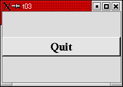
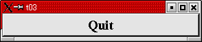
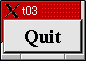
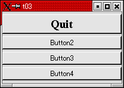
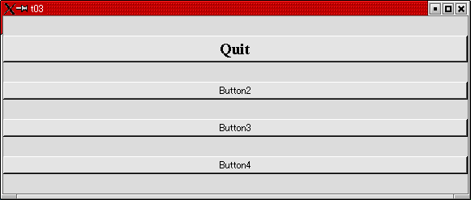
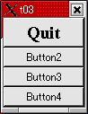
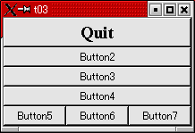
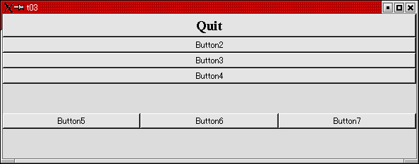
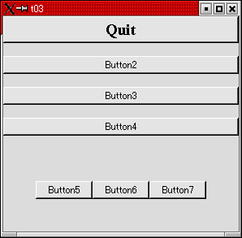
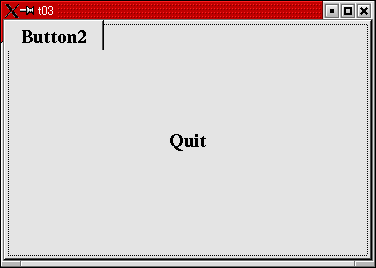

トップページ＞＞＞
「ぷろぐらみんぐ」目次＞＞＞
「Qt Tutorial Index Page」
Chapter 3: Family Values
初版作成：2002/12/27
- ソースコード
- 解説
- コンパイル・動作確認
- いじくりまわす

さて、今回はウィジェットのレイアウトを楽にしてくれる、Qtの提供するQVBoxを使ってみます。
Qtではウィジェットの配置を簡単にしてくれるレイアウトコントロール、とでもいうべき代物があります。それ自体は
ユーザーインターフェイスとしての役目を果たさないのですが、ウィジェットの配置に関して勝手に調節してくれます。
そういう点ではWindowsでは見られない一風変わった代物ではあります。具体的な説明の前に、とにかく作って動かして
みましょう。単純に動かしただけでは上に示すような、あんまり代わり映えのしない見た目ですが・・・さてはて。
どーでもいいけどこの冒頭文書、原文完全無視したオリジナル。
ついでに、今回は親ウィジェットと子ウィジェットの作例でもあります。
#include <qapplication.h>
#include <qpushbutton.h>
#include <qfont.h>
#include <qvbox.h>
int main( int argc, char **argv )
{
QApplication a( argc, argv );
QVBox box;
box.resize( 200, 120 );
QPushButton quit( "Quit", &box );
quit.setFont( QFont( "Times", 18, QFont::Bold ) );
QObject::connect( &quit, SIGNAL(clicked()), &a, SLOT(quit()) );
a.setMainWidget( &box );
box.show();
return a.exec();
}
目次に戻る
さて、それでは今回のポイントについて順に説明していきましょう。
（qapplication.h, qpushbutton.h などについては説明は省きます。
#include <qvbox.h>
ここで、レイアウトクラス（とでも言うべき）QVBoxクラスを定義しているヘッダファイルを作成します。
QVBoxやレイアウトクラスの説明に関してはもうちょっとお待ちを・・・。
QVBox box;
さて、ここでQVBoxクラスのオブジェクトを作成しています。んでもって、続く
box.resize( 200, 120 );
でもって、QVBoxのサイズを200x120に設定しています。・・・いよいよです。
QPushButton quit("Quit", &box);
ここです！今回のポイントが詰まっているのは。
特にBCBをいじくったことのある人なら、動的にVCLを生成するときの親コントロールの設定とそっくりなのに思い当たり
ませんか？ようやく、親ウィジェットの登場となるわけです。よーするに親ウインドウと子ウインドウの関係です。
では・・・なんでわざわざQVBoxなんてーのを親ウインドウにしたのでせう？それはQVBoxがレイアウトを自動で行ってくれる
ためのウィジェットであるからです。
よーするにですね。QVBox だの QHBox だの QGridLayout だのは、自分の子ウィジェットが作成されると適当に、自動
配置してくれるわけです。
QVBoxは Vertical に。QHBoxは Horizontal に。QGridLayout は升目状に・・・そんな感じで、勝手に配置してくれるので
特に動的にウィジェットを作成したり、試しに作ってみたオリジナルウィジェットをさくっと試したいときに最適な代物な
わけです。
とにかく、デフォルトで勝手に汎用ウインドウになってくれるアーンド、ウィジェットの配置もテキトーにやってくれちゃう、
結構便利な「テンプレートウインドウ」みたいなシロモノです、はい。
ちょっと、あとでいじくってみましょう。とりあえず先に進みます。
box.show();
後は今までと同様 setMainWidget()します。今回は QVBox の box がトップレベルウインドウに当たりますのでそっちを指定
します。んでもって、box.show()呼び出してウィジェット表示、ですか。
親ウィジェットが表示されるとき、明示的に QWidget::hide() を呼んでない限りその子ウィジェットも自動的に表示されます。
目次に戻る
んじゃあ、コンパイルしてみましょう。
[fenjin@murasame t03]$ vi t03.cpp
[fenjin@murasame t03]$ ls
t03.cpp
[fenjin@murasame t03]$ progen -n t03 -o t03.pro
[fenjin@murasame t03]$ tmake -o Makefile t03.pro
[fenjin@murasame t03]$ make
g++ -c -pipe -Wall -W -O2 -DNO_DEBUG -I/usr/lib/qt/include -o t03.o t03.cpp
g++ -o t03 t03.o -L/usr/lib/qt/lib -L/usr/X11R6/lib -lqt -lXext -lX11 -lm
[fenjin@murasame t03]$ ls
Makefile t03* t03.cpp t03.o t03.pro
実行してみると、冒頭に示したようなウインドウが表示されるはずです。
少し広げてみます。

幅や位置も適当に調節してくれてますね。
限界まで縮めてみました。

ボタンの大きさを限度に、これ以上は縮まりません。
まあ、こんな感じです。
目次に戻る
さて。まずはQVBoxの醍醐味を堪能するために、ボタンを追加してみます。
適当に三つほど追加してみましょう。
修正前：
quit.setFont( QFont( "Times", 18, QFont::Bold ) );
QObject::connect( &quit, SIGNAL(clicked()), &a, SLOT(quit()) );
修正後：
quit.setFont(QFont("Times", 18, QFont::Bold));
QPushButton b2("Button2", &box);
QPushButton b3("Button3", &box);
QPushButton b4("Button4", &box);
QObject::connect(&quit, SIGNAL(clicked()), &a, SLOT(quit()));
結果を示します。最初がデフォルトの実行結果、次がちょっと広げた結果、最後が限界まで縮めた結果です。



・・・いかがでしょうか。ボタンの配置が自動化されている、しかも「とりあえずレイアウトを意識して配置される」
便利さが感じられます。
ワンモアクエスチョン。・・・レイアウトの中にレイアウトを入れることはできるのでしょうか？つまり、レイアウトの
入れ子構造とかは簡単にできるんでしょうか。
いっちょう、QHBoxの試しもかねてやってみましょう。
とにかくQHBoxを QVBoxクラスのboxオブジェクトを親として生成してみます。んで、そのQHBoxの中に三つほどボタンを
つっこんでみます。
修正前：
QPushButton b4("Button4", &box);
QObject::connect(&quit, SIGNAL(clicked()), &a, SLOT(quit()));
修正後：
QPushButton b4("Button4", &box);
QHBox hbox(&box);
QPushButton b5("Button5", &hbox);
QPushButton b6("Button6", &hbox);
QPushButton b7("Button7", &hbox);
QObject::connect(&quit, SIGNAL(clicked()), &a, SLOT(quit()));
んで、実行結果です。


・・・さっきまでとボタンの間隔が違ってます。でもまあ、とりあえず配置は良い感じに自動化されてますね。
ところで今回、qhbox.h みたいなのをインクルードせずともコンパイルが通りました。これはQVBoxはQHBoxから派生されている
からです。従ってqvbox.h 中ですでに qhbox.h がインクルードされていたのです。
ところでQVBoxとかQHBoxのドキュメントを読んでいるとこんなメソッドがあることがわかります。
void setSpacing ( int )
bool setStretchFactor ( QWidget *, int stretch )
void setMargin (int )
これらでもって、ちょっと配置間隔をいじくってみたくなりました。
効果のほどを個別確認するために、QVBox の方で setSpacing() を。QHBox の方で setMargin() をそれぞれ適用して
みます。
修正前：
a.setMainWidget(&box);
修正後：
box.setSpacing(16);
hbox.setMargin(40);
a.setMainWidget(&box);
実験結果です。

ほぼ、メソッド名通りの結果となったようです。setSpacing はウィジェット間隔を。setMarginはレイアウトボックスの内側
からの余白を指示するメソッドのようです。
こうしてみるとくだらない実験がむらむらとしたくなってきます。「ではQHBoxの中にさらにQVBoxを入れてみたらどうなる？」
とか、「QPushButton自体を親ウインドウとして、その中にレイアウトを張り付けてその中に・・・」とか。
だいぶ長くなってきたので、今回はこの最後の実験で締めさせていただきます。そもそもコンパイルできるのか？
まあ最後のは非常に興味深い実験ではありますが、とりあえず今回は下の実験で締めさせていただきます。
・・・ソースは省略。QPushButtonを親ウィジェット0で作って、代わりにQVBox box(&quit)としてください。んで、
setMainWidget(&quit)にして、box.show()ではなくてquit.show()にします。
実行結果は・・・なんじゃこりゃ。

やっぱり変になっちゃったみたいです。今回はこれ以上はあきらめましょう。
実は、原文の方には QSizePolicy とか言うのと関連してウィジェットのサイズ変更の際のタイプ、みたいなのが
設定できるらしいことが書いてあります。んで、実際少しあさってみたんですが結構深そうで、めんどくさそうなので今回は
パスすることにしました。まあ、QVBoxとQHBoxだけでもそれなりに遊べることが判明したので良しとしましょう。
んじゃ今回はこの辺でおしまいにします。
目次に戻る
トップページ＞＞＞
「ぷろぐらみんぐ」目次＞＞＞
「Qt Tutorial Index Page」